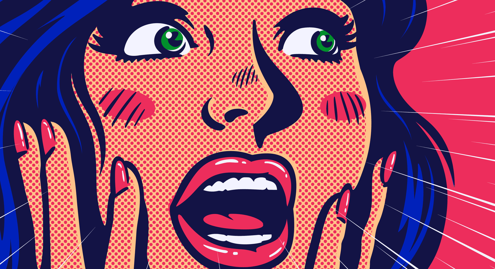

Este é o layout completo combinando cores vibrantes e alto contraste. O título usa sombras em camadas, a imagem possui um filtro automático que aumenta a saturação para torná-la mais viva e o container de texto possui uma trava para exibir exatamente 5 linhas.